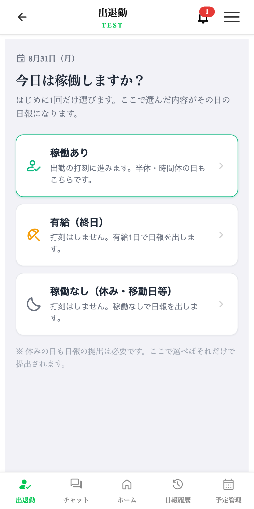
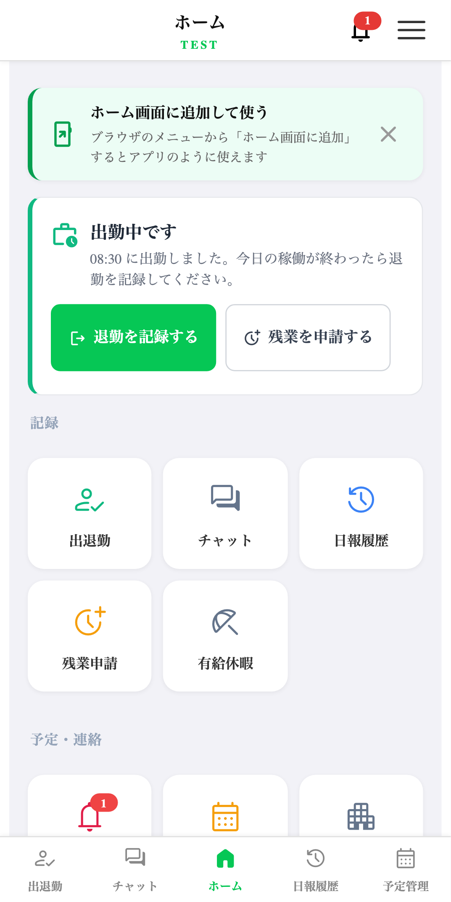
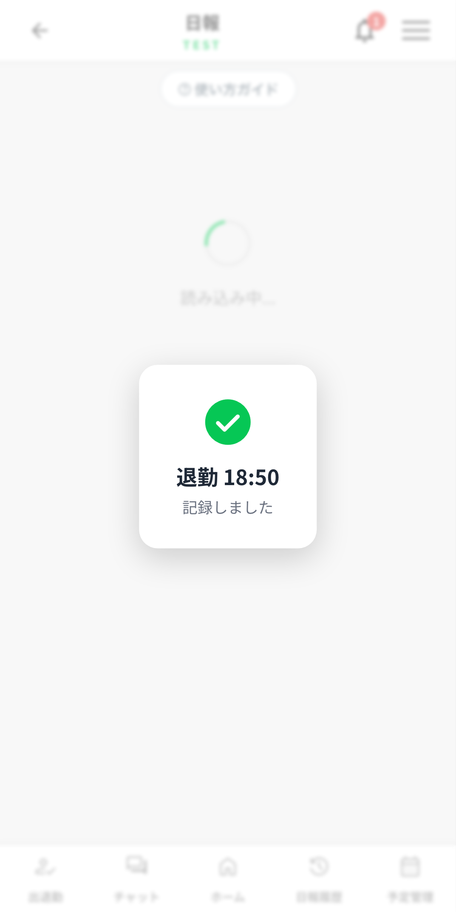
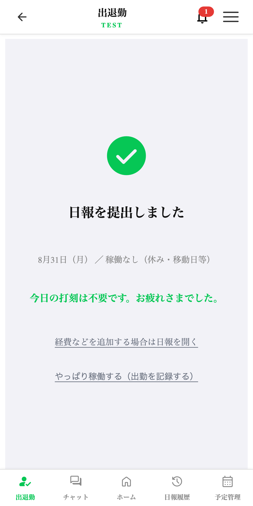
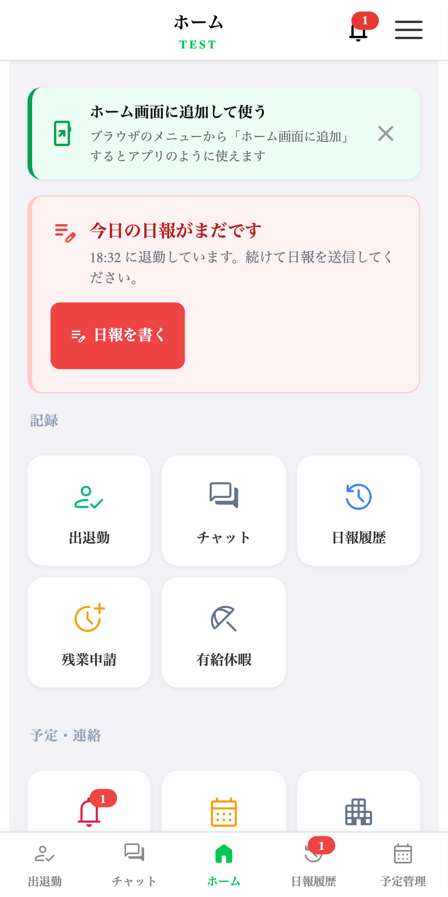
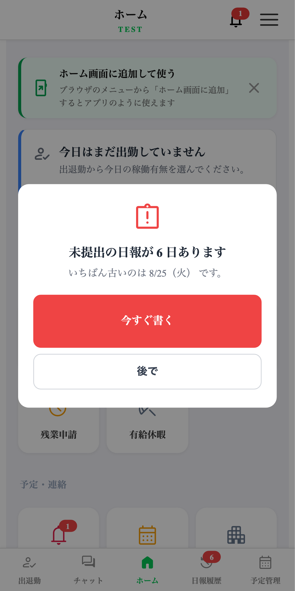
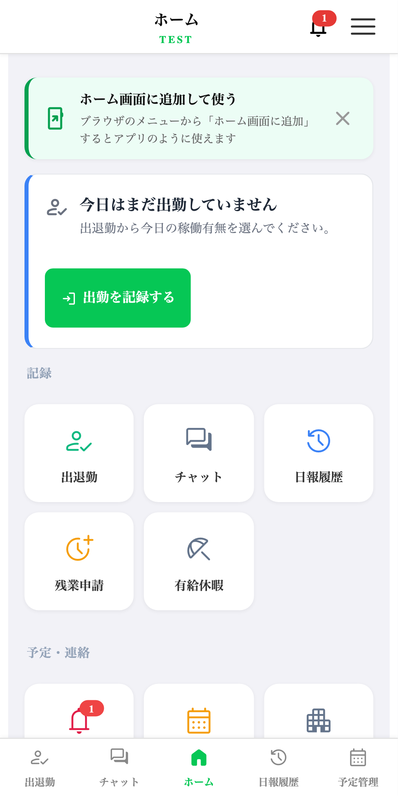
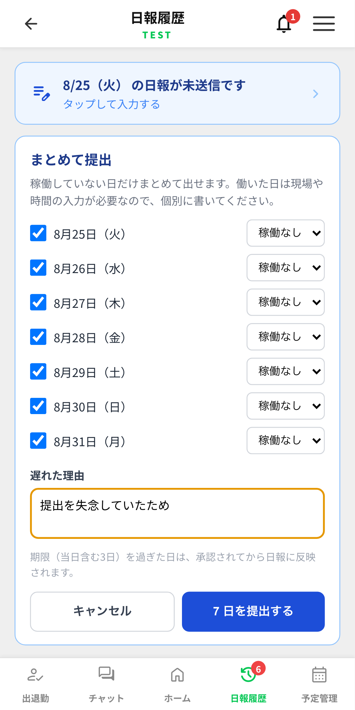

出退勤と日報のフロー変更
2026-08-31 リリース ／ 対象: 作業員アプリ（LIFF）全員 ／ データベースの変更なし
出退勤の打刻を全員に徹底させるため、日報の送信を出退勤の流れに組み込みました 。
あわせて「今どうなっているか」が画面に出ていなかった点と、読み込み後に画面が動いて
誤タップする問題を直しています。
POINT 1
朝に1回だけ聞く
「今日は稼働しますか？」に答えるところから始まります。休みなら打刻フォームには進みません。
POINT 2
退勤したら日報へ直行
完了画面を挟まず日報の入力画面が開きます。打刻と日報が1本の流れになります。
POINT 3
出し忘れを追いかける
退勤したのに日報が無い人に、当日は画面で、翌日以降は起動時に知らせます。
何が問題だったか
これまで
休み・有給の日でも出退勤フォームを開く必要があった
稼働の有無を打刻の前と日報の中で2回 聞かれていた
退勤 → 完了画面 → 日報。完了画面で気づかず閉じる人がいた
日報を出したかどうかが、どこにも表示されていなかった
これから
休み・有給は朝の選択だけで日報が提出 され、打刻はしない
稼働の有無を聞くのは朝の1回だけ
退勤 → そのまま日報 （完了画面なし）
ホームに今日の状態と「次に押すもの」が常に出る
1日の流れ
■ 稼働する日
朝 今日は稼働しますか？
▶
出勤の打刻 確認事項＋位置情報
▶
作業 必要なら残業申請
▶
退勤の打刻
▶
日報 自動で入力画面へ
■ 休み・有給の日
朝 今日は稼働しますか？
▶
ここで終わり 日報は自動で提出済み。打刻は不要
週7で日報を出すルールは変わりません。
ただし休みの日は上の1タップで提出が完了するので、日報の画面を開く必要がなくなります。
画面（稼働する日）

① 出退勤を開くと最初に出ます。 半休・時間休の日は「稼働あり」を選びます（その日は働くため）。

② 出勤中のホーム。 出勤時刻と、次にやること（退勤・残業申請）が出ます。

③ 退勤を押した直後。 完了画面を挟まず日報の画面が開き、記録できたことを中央に表示して自動で消えます。
画面（休み・有給の日）

「稼働なし」または「有給」を選ぶとここで終わりです。 日報は提出済みで、打刻は求められません。移動日のガソリン代などがある場合は下のリンクから日報を開けます。
気が変わった場合
休みと答えた日にもう一度出退勤を開いても、打刻フォームには入りません
（休みと申告した日に出勤記録が付くのを防ぐため）。「やっぱり稼働する（出勤を記録する）」 を押すと通常どおり打刻できます。
有給の日数について 終日の有給（1日） です。
半休・時間単位の有給はその日働くので「稼働あり」を選び、日報の中で入力してください。
日報の出し忘れ対策
退勤したのに日報を出していない人に、3段階で知らせます 。画面をロックすることはありません。
タイミング 知らせ方 退勤した直後 日報の入力画面が自動で開く 同じ日のうち ホームの一番上に赤い案内＋下のメニュー「日報履歴」に赤いバッジ 日をまたいでも未提出 アプリを開いたときに案内が出る（「後で」で閉じられます。閉じたらそのセッション中は出ません）

退勤済みで日報が無いとき。 他の状態（緑・青・グレー）と違う赤で出ます。朝や作業中には出ません。

前の日以前の分が残っているとき。 アプリを開いたときに出ます。「後で」で閉じられます。

まだ出勤していないとき。 状態と次に押すものが出ます。この時点では日報の催促は出しません。
溜まっている未提出のまとめ提出

日報履歴の上に出ます。 理由は1回書けば全部の日に付きます。
これまでに溜まっている未提出日を、理由を1回書くだけでまとめて提出 できるようにしました。
対象は稼働していない日だけ です。働いた日は現場・時間・経費の入力が必要なので、1日ずつ書いてください
日ごとに「稼働なし」「有給」を選べます
提出期限（当日を含む3日）を過ぎた日は、これまでどおり承認待ちになります。 まとめて出したからといって承認が飛ぶことはありません
今後、未提出は溜まりにくくなります。 稼働する日は打刻の流れで、休みの日は朝の選択で、どちらも日報が作られるためです。
今回まとめて出せるようにしたのは、これまでに溜まっている分を片付けるためです。
その他の変更
変更点 内容
日報の入口
メニューの「日報登録 」を「日報履歴 」に置き換えました。日報は「退勤 → そのまま入力」が正規の入口になり、出し忘れ・修正は履歴から入ります。履歴の上部に未提出の案内を置いています。※ 差戻し・残業承認・編集許可の通知から日報を開くリンクは、これまでどおり動きます。
画面のガタつき
読み込みが終わった瞬間にメニューの位置が動き、押そうとしたものと別のボタンを押してしまう問題を直しました（実測で366px 動いていました）。アイコンの表示待ちが原因で、全画面 に効きます。
予定管理
最上部に出ていた予定追加のお知らせバナーを廃止しました。同じ内容が「お知らせ」画面とベルのバッジに出ており重複していたためです。バナーが後から出てタブが動く問題も同時に解消しています。
出退勤の文言
「この現場には確認事項がありません」など、現場ごとに打刻していた頃の文言を実態に合わせました。「現在地を取得」がボタンに見えづらかったのも直しています。
変わらないもの
日報の中身・提出ルール （週7の提出、当日含む3日の提出期限、期限切れの承認）は変えていません人件費の計算 は従来どおり日報の作業時刻が基準です。打刻の実時刻は表示専用のままですデータベースの変更はありません。 既存のデータはそのままで、問題があれば元に戻すだけで復旧します管理画面の機能は変わりません
作業員のみなさんへの連絡文（そのままお使いください）
アプリの出退勤まわりが変わりました。退勤を押すとそのまま日報の入力画面が開きます。 そのまま入力して送信してください。
切り替えのタイミングについて 業務終了後または休日 の反映を推奨します。
反映後は全員のアプリが自動で新しい画面になります（作業員側の操作は不要です）。
GENLINKS ／ 画面キャプチャは検証環境（テナント名 TEST）のものです。実際の画面では会社名が表示されます。